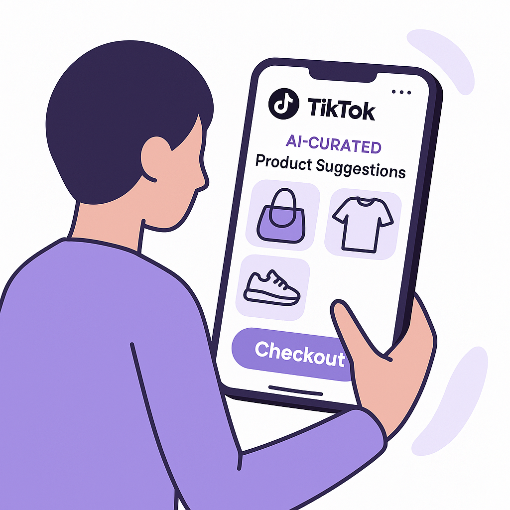
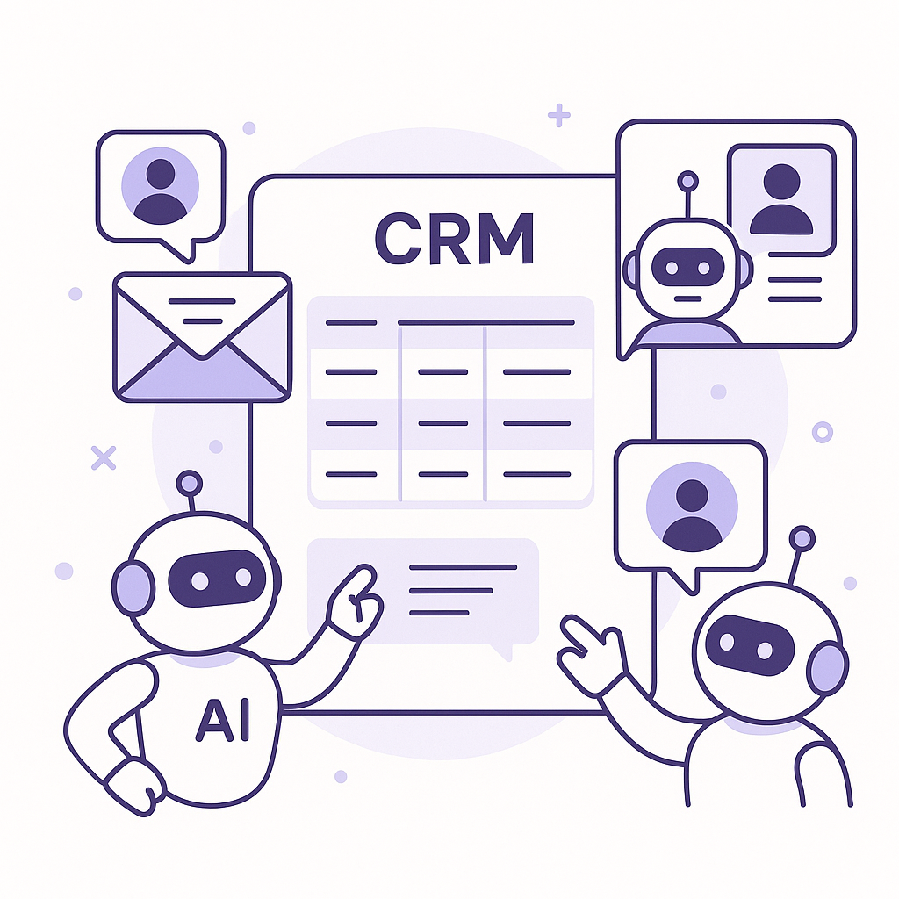
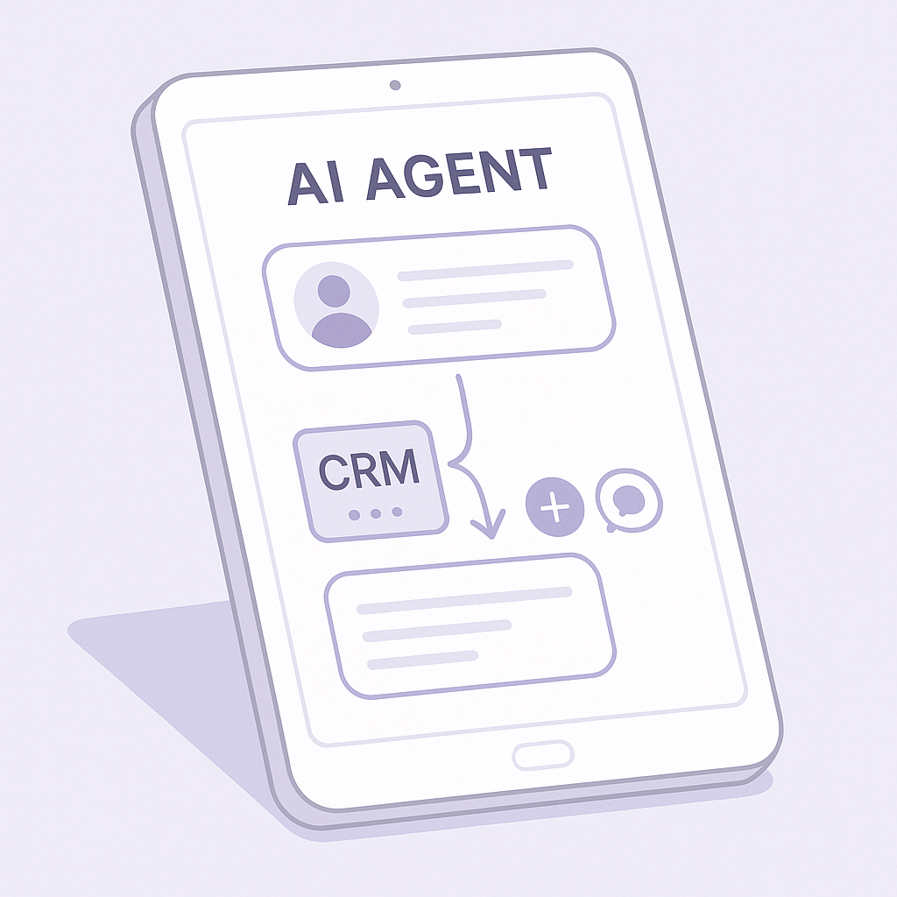
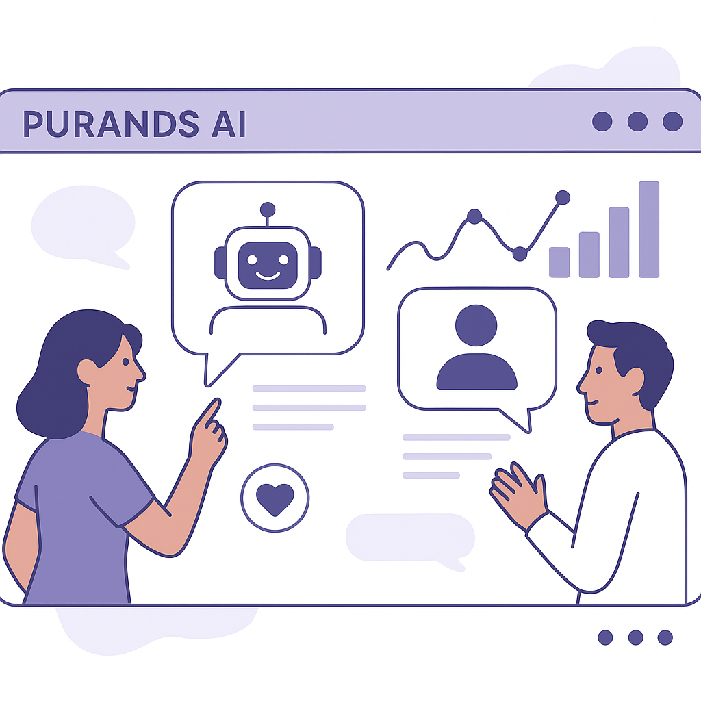

Publishing Recommendation
reviseSeveral drafted posts suffer from overuse of AI jargon and lack clear practical insights or evidence. Some claims are too broad or hype-driven, which could undermine credibility.
Today's drafts need refinement to better align with Purands' practical and insightful brand voice. Posts should avoid generic claims about AI and instead focus on specific, evidence-backed insights that offer real value to the reader. Revisions should clarify the tangible benefits and challenges of the technologies discussed, ensuring each piece leaves the reader with actionable takeaways.
LinkedIn Posts (10)
1. TikTok to add AI-powered discovery and one-click checkout ★ Purands solution · high priority
CTA: How do you see TikTok's new features changing your customer engagement strategy?

⬇ Download image
Image prompt · isometric-flat
Caption: AI-powered discovery on TikTok.
Alternative hooks
- TikTok's new AI features could change the way we shop.
- Imagine buying with just a tap on TikTok.
- What if TikTok could predict what you want to buy next?
Research behind this post (sources, summaries & confidence)
TikTok to add AI-powered discovery and one-click checkout conf 0.80 · WhatsApp commerce
TikTok's integration of AI-powered discovery and seamless checkout processes directly impacts retention marketing by enhancing the purchasing experience and reducing friction, crucial for maximizing customer engagement and repeat purchases.
Sources & what I took from each
- TikTok is adding AI-powered discovery.: TikTok is reportedly testing AI features to enhance content discovery, which is expected to personalize user experience and increase engagement. ↗ read source
- TikTok to integrate one-click checkout.: The platform plans to simplify the purchasing process by allowing in-app purchases through a one-click checkout feature. ↗ read source
Original trend links
Risks / caveats
- Potential privacy concerns with AI-driven personalization.
- Technical challenges in implementing seamless checkout across diverse payment systems.
2. Anta Sports becomes largest Puma shareholder ★ Purands solution · high priority
CTA: How are you adapting your retention strategies to these market changes?
Alternative hooks
- Anta Sports just became Puma's largest shareholder. What does this mean for APAC commerce?
- A big shift in APAC's sports apparel market: Anta Sports is now Puma's largest shareholder.
- Anta Sports' acquisition of Puma shares is a game-changer for APAC commerce dynamics.
Research behind this post (sources, summaries & confidence)
Anta Sports becomes largest Puma shareholder conf 0.80 · APAC commerce dynamics
Anta Sports' acquisition impacts the competitive landscape in APAC, influencing brand strategies and partnerships, crucial for businesses aiming to align retention marketing with regional commerce dynamics.
Sources & what I took from each
- Anta Sports acquires significant stake in Puma.: Anta's acquisition positions it as the largest shareholder, potentially impacting market dynamics in the sports apparel industry. ↗ read source
Original trend links
Risks / caveats
- Potential regulatory scrutiny over market concentration.
- Integration challenges and cultural differences between companies.
3. Nous Research launches AI agents for business users ★ Purands solution · high priority
CTA: How are you using AI to enhance customer retention in your business?

⬇ Download image
Image prompt · flat-vector
Caption: AI agents in retention marketing.
Alternative hooks
- Nous Research's AI agents are turning heads in business operations.
- What's the real impact of AI-driven workflow optimization on retention marketing?
- AI agents: the new frontier in business efficiency and customer engagement.
Research behind this post (sources, summaries & confidence)
Nous Research launches AI agents for business users conf 0.75 · AI startups
The introduction of AI agents tailored for business operations highlights growing trends in AI-driven automation and workflow optimization, crucial for retention marketing strategies focusing on efficiency and customer engagement.
Sources & what I took from each
- Nous Research launches AI agents for business.: Nous Research has developed AI agents specifically designed to improve business processes and enhance workflow efficiency. ↗ read source
Original trend links
Risks / caveats
- AI adoption may face resistance due to change management challenges.
- Ensuring data privacy and security when integrating AI agents into business operations.
4. Meta Muse launches on iPad, expanding AI agent reach ★ Purands solution · high priority
CTA: How do you see AI agents changing your customer engagement strategy?

⬇ Download image
Image prompt · isometric-flat
Caption: AI integration on iPad.
Alternative hooks
- Meta Muse just landed on the iPad, redefining AI integration.
- AI agents are taking over iPads, and the implications are huge.
- Meta Muse's leap to iPad marks a new era for AI in business.
Research behind this post (sources, summaries & confidence)
Meta Muse launches on iPad, expanding AI agent reach conf 0.70 · AI in business
The rapid expansion of Meta's Muse AI agent to new platforms like iPad signals the increasing presence and integration of AI agents in everyday business operations, which can drive new engagement strategies and user interactions.
Sources & what I took from each
- Meta Muse launches on iPad.: Meta has expanded its Muse AI agent to iPad, marking a significant step in its platform integration strategy. ↗ read source
Original trend links
Risks / caveats
- The success of AI agents depends on user adoption and effective integration with existing workflows.
- Potential security and privacy issues associated with AI agents processing sensitive data.
5. ChatGPT's new visual interface enhances user experience ★ Purands solution · high priority
CTA: Have you integrated visual interfaces in your customer engagement strategy? How's it working out?

⬇ Download image
Image prompt · flat-vector
Caption: Interactive visuals in AI engagement.
Alternative hooks
- Interactive visuals are reshaping AI-driven customer engagement.
- How can enhanced visuals transform retention marketing?
- Visual interfaces aren't just for show; they're for deeper engagement.
Research behind this post (sources, summaries & confidence)
ChatGPT's new visual interface enhances user experience conf 0.70 · AI in business
ChatGPT's update with interactive visuals can significantly enhance user engagement and interaction, offering new opportunities for brands to develop personalized and immersive customer experiences.
Sources & what I took from each
- ChatGPT introduces a visual interface.: The new visual interface aims to make interactions more engaging and intuitive, potentially increasing user satisfaction. ↗ read source
Original trend links
Risks / caveats
- Complex visuals may overcomplicate user interactions if not well-executed.
- Increased data demands and processing needs with richer media content.
6. Liquid AI releases multimodal decision models ★ Purands solution · high priority
CTA: How do you see multimodal AI models changing your approach to customer engagement?
Alternative hooks
- Liquid AI's latest release is a game-changer for customer data analysis.
- Can multimodal decision models reshape retention marketing?
- AI advancements are refining how we understand customer behavior.
Research behind this post (sources, summaries & confidence)
Liquid AI releases multimodal decision models conf 0.70 · AI startups
Liquid AI's release of multimodal decision models represents a significant advancement in AI capabilities, offering potential improvements in customer data analysis and personalized recommendations, key components of retention marketing.
Sources & what I took from each
- Liquid AI releases new multimodal models.: These models are designed to process diverse types of data inputs, enhancing decision-making capabilities. ↗ read source
Original trend links
Risks / caveats
- Multimodal models require significant computational resources.
- Risk of overfitting if not properly managed during training.
7. Microsoft AI's MAI-Transcribe-2 challenges competitors on price and speed
CTA: What do you think? Is the trade-off worth it?
Alternative hooks
- Microsoft is shaking up the transcription game.
- How fast is too fast when it comes to AI transcription?
- Can cheaper transcription redefine customer engagement?
Research behind this post (sources, summaries & confidence)
Microsoft AI's MAI-Transcribe-2 challenges competitors on price and speed conf 0.80 · AI industry
Microsoft AI's new transcription service, which undercuts competitors on price and speed, provides businesses a cost-effective solution for integrating voice data into customer engagement strategies, enhancing personalization and retention.
Sources & what I took from each
- Microsoft's new transcription service outperforms competitors.: MAI-Transcribe-2 is reportedly faster and cheaper than similar services offered by OpenAI and Google. ↗ read source
Original trend links
Risks / caveats
- Price competition may lead to reduced margins for all players.
- Quality concerns if cost-cutting affects transcription accuracy.
8. OpenAI's GPT-6 Astra release
CTA: Have you considered the ethical implications of AI in your business?
Alternative hooks
- OpenAI's GPT-6 Astra is here, and it's set to change the game.
- Advanced AI models are not just sci-fi anymore, they're business reality.
- Can GPT-6 Astra enhance your customer engagement strategy?
Research behind this post (sources, summaries & confidence)
OpenAI's GPT-6 Astra release conf 0.80 · AI in business
GPT-6 Astra's release marks a significant advancement in AI capabilities, with potential applications in customer engagement, personalization, and retention marketing strategies.
Sources & what I took from each
- OpenAI launches GPT-6 Astra.: GPT-6 Astra offers enhanced capabilities, including advanced language understanding and generation, suitable for diverse business applications. ↗ read source
Original trend links
Risks / caveats
- High computational requirements for running advanced AI models.
- Ethical concerns regarding AI's role in decision-making processes.
9. Meta AI Open-Sources Rebalancer for AI placement problems
CTA: How do you see open-source tools like Rebalancer impacting your industry?
Alternative hooks
- Meta AI has opened the floodgates by open-sourcing Rebalancer.
- 40 million placement problems a day - that's what Rebalancer handles.
- Can open-source AI tools like Rebalancer change the game?
Research behind this post (sources, summaries & confidence)
Meta AI Open-Sources Rebalancer for AI placement problems conf 0.75 · AI industry
Open-sourcing Rebalancer highlights a move towards democratizing AI tools, potentially accelerating AI deployment and innovation across industries, impacting retention strategies by optimizing resource allocation and operational efficiencies.
Sources & what I took from each
- Meta AI open-sources Rebalancer.: Rebalancer is a tool that solves complex placement problems, now open-source to foster broader use and innovation. ↗ read source
Original trend links
Risks / caveats
- Open-source tools may face adoption hurdles if not well-documented.
- Potential for misuse if tools are not properly managed.
10. Google DeepMind's EmbeddingGemma 2 launches
CTA: How do you see multimodal AI impacting your business strategy?
Alternative hooks
- Google DeepMind's newest model is stirring up the AI landscape.
- Ever wondered what multimodal AI can do for customer insights?
- EmbeddingGemma 2 is here, and it might change how we see customer data.
Research behind this post (sources, summaries & confidence)
Google DeepMind's EmbeddingGemma 2 launches conf 0.75 · AI startups
EmbeddingGemma 2's launch showcases Google's push in multimodal AI, offering enhanced data integration capabilities that can improve customer segmentation and targeting in retention strategies.
Sources & what I took from each
- Google DeepMind launches EmbeddingGemma 2.: The model is designed to handle multimodal data, facilitating enhanced integration and analysis for improved customer insights. ↗ read source
Original trend links
Risks / caveats
- Challenges in integrating new AI models with existing systems.
- Potential over-reliance on AI for critical business decisions.
Today's Trends
| # | Trend | Category | Why it matters |
|---|---|---|---|
| 1 | TikTok to add AI-powered discovery and one-click checkout
source |
WhatsApp commerce | TikTok's integration of AI-powered discovery and seamless checkout processes directly impacts retention marketing by enhancing the purchasing experience and reducing friction, crucial for maximizing customer engagement and repeat purchases. |
| 2 | Meta Muse launches on iPad, expanding AI agent reach
source |
AI in business | The rapid expansion of Meta's Muse AI agent to new platforms like iPad signals the increasing presence and integration of AI agents in everyday business operations, which can drive new engagement strategies and user interactions. |
| 3 | Nous Research launches AI agents for business users
source |
AI startups | The introduction of AI agents tailored for business operations highlights growing trends in AI-driven automation and workflow optimization, crucial for retention marketing strategies focusing on efficiency and customer engagement. |
| 4 | ChatGPT's new visual interface enhances user experience
source |
AI in business | ChatGPT's update with interactive visuals can significantly enhance user engagement and interaction, offering new opportunities for brands to develop personalized and immersive customer experiences. |
| 5 | Liquid AI releases multimodal decision models
source |
AI startups | Liquid AI's release of multimodal decision models represents a significant advancement in AI capabilities, offering potential improvements in customer data analysis and personalized recommendations, key components of retention marketing. |
| 6 | Microsoft AI's MAI-Transcribe-2 challenges competitors on price and speed
source |
AI industry | Microsoft AI's new transcription service, which undercuts competitors on price and speed, provides businesses a cost-effective solution for integrating voice data into customer engagement strategies, enhancing personalization and retention. |
| 7 | Meta AI Open-Sources Rebalancer for AI placement problems
source |
AI industry | Open-sourcing Rebalancer highlights a move towards democratizing AI tools, potentially accelerating AI deployment and innovation across industries, impacting retention strategies by optimizing resource allocation and operational efficiencies. |
| 8 | Anta Sports becomes largest Puma shareholder
source |
APAC commerce dynamics | Anta Sports' acquisition impacts the competitive landscape in APAC, influencing brand strategies and partnerships, crucial for businesses aiming to align retention marketing with regional commerce dynamics. |
| 9 | Mistral AI releases Mistral Large 4 model
source |
AI startups | Mistral AI's new model release signifies advancements in AI capabilities and scalability, offering businesses enhanced tools for data processing and customer insights, key for retention marketing innovations. |
| 10 | Google DeepMind's EmbeddingGemma 2 launches
source |
AI startups | EmbeddingGemma 2's launch showcases Google's push in multimodal AI, offering enhanced data integration capabilities that can improve customer segmentation and targeting in retention strategies. |
| 11 | Mecka AI raises $60M for human motion data
source |
AI startups | Mecka AI's funding round emphasizes the growing interest in AI applications for motion data, which could lead to innovative customer engagement methods and enhanced user experiences in commerce. |
| 12 | Microsoft releases AI-friendly Surface Laptop Ultra
source |
AI in business | The launch of AI-optimized hardware by Microsoft indicates a trend towards more integrated AI capabilities in business tools, which can support enhanced data processing and retention strategies. |
| 13 | OpenAI's GPT-6 Astra release
source |
AI in business | GPT-6 Astra's release marks a significant advancement in AI capabilities, with potential applications in customer engagement, personalization, and retention marketing strategies. |
| 14 | Meta and Microsoft limit Claude AI usage
source |
AI industry | Meta and Microsoft's steps to reduce Claude AI usage reflect concerns over AI dependency and data security, highlighting important considerations for businesses integrating AI into retention strategies. |
Risk Assessment
- Potential overstatement of AI capabilities, particularly in the TikTok and Nous Research posts.
- Risk of sounding AI-generated due to generic language and lack of specific examples.
Suggested LinkedIn Comments (30)
Open each post, then paste the copied comment. Nothing is posted automatically.
1. respectful challenge · rss:techcrunch.com — Mecka AI collects and analyzes human motion data to train humanoid robots and ot
Post by: rss:techcrunch.com
Why it works: The comment acknowledges the innovation while pointing out potential ethical issues, adding depth to the discussion.
↗ Open LinkedIn post to paste comment2. insight · rss:techcrunch.com — Endeavor Catalyst just raised $320 million to keep backing founders outside Sili
Post by: rss:techcrunch.com
Why it works: It highlights the unique funding model and its implications for sustainable growth, adding a layer of analysis.
↗ Open LinkedIn post to paste comment3. opinion · rss:techcrunch.com — The developer of Hermes Agent raised a $90 million Series B.
Post by: rss:techcrunch.com
Why it works: The comment offers a strategic perspective on scaling, providing a thoughtful angle beyond the funding news.
↗ Open LinkedIn post to paste comment4. insight · rss:techcrunch.com — Microsoft revealed the specs and price for its Surface Laptop Ultra, AI PCs that
Post by: rss:techcrunch.com
Why it works: It acknowledges the potential impact while pointing out the importance of practical usability, offering a balanced view.
↗ Open LinkedIn post to paste comment5. opinion · rss:techcrunch.com — Meta’s AI agent Muse is now available on iPad, just a month after its mobile deb
Post by: rss:techcrunch.com
Why it works: It recognizes Meta's strategic ambition while emphasizing the importance of user experience, grounding the comment in practical concerns.
↗ Open LinkedIn post to paste comment6. respectful challenge · rss:techcrunch.com — ChatGPT’s teen safeguards are meant to protect vulnerable users, but new testing
Post by: rss:techcrunch.com
Why it works: The comment raises important safety concerns, urging for improvements in AI design with a focus on responsibility.
↗ Open LinkedIn post to paste comment7. insight · rss:techcrunch.com — X is turning its NFL-focused Gametime feature into a year-round sports destinati
Post by: rss:techcrunch.com
Why it works: It evaluates the potential and challenges of expanding the feature, adding a strategic viewpoint to the conversation.
↗ Open LinkedIn post to paste comment8. opinion · rss:techcrunch.com — OpenAI is launching a new user interface that will bring interactive visuals to
Post by: rss:techcrunch.com
Why it works: The comment offers a critical take on the new feature's potential impact, emphasizing substance over form.
↗ Open LinkedIn post to paste comment9. insight · rss:techcrunch.com — As it turns out, the cure for stuffy, chemical-infused office air might be a tow
Post by: rss:techcrunch.com
Why it works: It adds practical value by highlighting a straightforward solution that aligns with well-being and productivity.
↗ Open LinkedIn post to paste comment10. insight · rss:techcrunch.com — CIA officer David Rush, who worked on highly sensitive intelligence programs, re
Post by: rss:techcrunch.com
Why it works: The comment identifies a systemic issue, adding depth to the understanding of the incident and suggesting broader implications.
↗ Open LinkedIn post to paste comment11. insight · rss:www.theverge.com — While much of the automotive world sits dumbfounded as China gobbles up all its
Post by: rss:www.theverge.com
Why it works: It highlights BMW's strategic focus and differentiates it from the broader market dynamics, providing a concrete observation.
↗ Open LinkedIn post to paste comment12. insight · rss:www.theverge.com — Teenage Engineering founder and CEO Jesper Kouthoofd told Highsnobiety that it p
Post by: rss:www.theverge.com
Why it works: It acknowledges the company's strategic pivot and provides a rationale for why it might be beneficial.
↗ Open LinkedIn post to paste comment13. insight · rss:www.theverge.com — A common misconception I've seen with Googlebooks is that the Quick Insert and G
Post by: rss:www.theverge.com
Why it works: It offers a perspective on incremental innovation and user experience, going beyond the post's surface details.
↗ Open LinkedIn post to paste comment14. insight · rss:www.theverge.com — Getting in on the Prime Day action doesn’t have to result in an empty wallet. Ju
Post by: rss:www.theverge.com
Why it works: It connects pricing strategy to consumer behavior, providing a deeper look at Amazon's market tactics.
↗ Open LinkedIn post to paste comment15. insight · rss:www.theverge.com — Just over a week ago, we covered a deal at Amazon that knocked around 30 percent
Post by: rss:www.theverge.com
Why it works: It ties the pricing strategy to consumer psychology, offering a concrete mechanism for its effectiveness.
↗ Open LinkedIn post to paste comment16. insight · rss:www.theverge.com — OpenAI is launching a new Intelligent UI feature in ChatGPT that allows the chat
Post by: rss:www.theverge.com
Why it works: It highlights the functional benefits of the new feature, linking it to broader trends in user interface design.
↗ Open LinkedIn post to paste comment17. insight · rss:www.theverge.com — The first array of laptops powered by Nvidia's new RTX Spark chip are designed t
Post by: rss:www.theverge.com
Why it works: It focuses on the competitive hardware landscape and emphasizes the innovation driving it.
↗ Open LinkedIn post to paste comment18. expansion · rss:www.theverge.com — For the first time in years, the Internet Corporation for Assigned Names and Num
Post by: rss:www.theverge.com
Why it works: It expands the post by exploring the potential impact on branding and identity in the digital space.
↗ Open LinkedIn post to paste comment19. insight · rss:www.theverge.com — Microsoft just wrapped up a big Windows and Surface-focused keynote in San Franc
Post by: rss:www.theverge.com
Why it works: It aligns the product's specifications with its market positioning, offering a clear insight into Microsoft's strategy.
↗ Open LinkedIn post to paste comment20. insight · rss:www.theverge.com — At today's Windows and Surface event, Microsoft showed off an upgrade to its Cop
Post by: rss:www.theverge.com
Why it works: It highlights the innovative aspect of the technology and its potential impact on user experience.
↗ Open LinkedIn post to paste comment21. opinion · rss:feeds.arstechnica.com — Get ready for more AI in your Windows and more AI on the desktop.
Post by: rss:feeds.arstechnica.com
Why it works: It acknowledges benefits while pointing out potential issues, providing a balanced view.
↗ Open LinkedIn post to paste comment22. insight · rss:feeds.arstechnica.com — Opus-built Creative Cloud alternatives are ambitious, free, and nowhere near fin
Post by: rss:feeds.arstechnica.com
Why it works: It recognizes the ambition but also stresses the importance of delivering on promises, which is often a critical hurdle.
↗ Open LinkedIn post to paste comment23. insight · rss:feeds.arstechnica.com — Pennsylvania reported 1,066 outbreak-linked cases on Wednesday.
Post by: rss:feeds.arstechnica.com
Why it works: It connects the news to the broader need for effective health responses, adding context to the raw numbers.
↗ Open LinkedIn post to paste comment24. respectful challenge · rss:feeds.arstechnica.com — TP-Link can't sell latest routers in US, still needs exemption from FCC ban.
Post by: rss:feeds.arstechnica.com
Why it works: It acknowledges the regulatory necessity but also questions the impact on innovation, sparking a nuanced discussion.
↗ Open LinkedIn post to paste comment25. expansion · rss:feeds.arstechnica.com — Altering molecular handedness has implications for the origins of life.
Post by: rss:feeds.arstechnica.com
Why it works: It expands on the scientific implications, inviting readers to consider the broader significance of such research.
↗ Open LinkedIn post to paste comment26. insight · rss:feeds.arstechnica.com — In renewed policy, pediatricians review the benefits of heating milk to kill ger
Post by: rss:feeds.arstechnica.com
Why it works: It ties the news to the broader theme of science validating traditional practices, adding depth to the topic.
↗ Open LinkedIn post to paste comment27. opinion · rss:feeds.arstechnica.com — Man gets 18 months for AI scheme stealing $8M in music streaming royalties.
Post by: rss:feeds.arstechnica.com
Why it works: It highlights the ethical responsibility that accompanies technological advances, a critical consideration in AI development.
↗ Open LinkedIn post to paste comment28. insight · rss:feeds.arstechnica.com — Car design sure riles people up on the Internet these days. Goes double for EVs.
Post by: rss:feeds.arstechnica.com
Why it works: It acknowledges the cultural impact of design, providing a different perspective beyond the technical aspects.
↗ Open LinkedIn post to paste comment29. opinion · rss:feeds.arstechnica.com — Trump's aggressive reshoring push could cost tech firms $230 billion, CTA estima
Post by: rss:feeds.arstechnica.com
Why it works: It offers a definitive view on the economic impact of reshoring, encouraging consideration of broader consequences.
↗ Open LinkedIn post to paste comment30. expansion · rss:feeds.arstechnica.com — Mistral says Le Chonk can rival top closed models while remaining open-weight.
Post by: rss:feeds.arstechnica.com
Why it works: It expands on the implications of open-weight models, suggesting potential benefits of openness in AI.
↗ Open LinkedIn post to paste comment